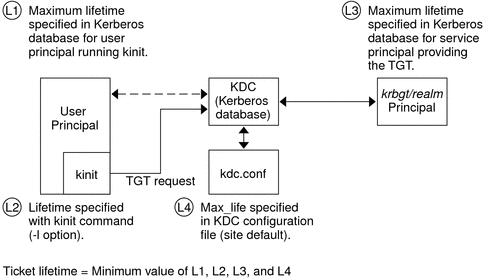

System Administration Guide: Security Services
|
|||||||||||||||||||||||||||||||
|
1. Security Services (Overview) Part II System, File, and Device Security 2. Managing Machine Security (Overview) 3. Controlling Access to Systems (Tasks) 4. Virus Scanning Service (Tasks) 5. Controlling Access to Devices (Tasks) 6. Using the Basic Audit Reporting Tool (Tasks) 7. Controlling Access to Files (Tasks) Part III Roles, Rights Profiles, and Privileges 8. Using Roles and Privileges (Overview) 9. Using Role-Based Access Control (Tasks) 10. Role-Based Access Control (Reference) Part IV Solaris Cryptographic Services 13. Solaris Cryptographic Framework (Overview) 14. Solaris Cryptographic Framework (Tasks) 15. Solaris Key Management Framework Part V Authentication Services and Secure Communication 16. Using Authentication Services (Tasks) 19. Using Solaris Secure Shell (Tasks) 20. Solaris Secure Shell (Reference) 21. Introduction to the Kerberos Service 22. Planning for the Kerberos Service 23. Configuring the Kerberos Service (Tasks) 24. Kerberos Error Messages and Troubleshooting 25. Administering Kerberos Principals and Policies (Tasks) 26. Using Kerberos Applications (Tasks) 27. The Kerberos Service (Reference) How the Kerberos Authentication System Works Gaining Access to a Service Using Kerberos Using Kerberos Encryption Types Notable Differences Between Solaris Kerberos and MIT Kerberos 28. Solaris Auditing (Overview) 29. Planning for Solaris Auditing 30. Managing Solaris Auditing (Tasks) |
Kerberos TerminologyThe following section presents Kerberos terms and their definitions. These terms are used throughout the Kerberos documentation. To grasp Kerberos concepts, an understanding of these terms is essential. Kerberos-Specific TerminologyYou need to understand the terms in this section in order to administer KDCs. The Key Distribution Center or KDC is the component of Kerberos that is responsible for issuing credentials. These credentials are created by using information that is stored in the KDC database. Each realm needs at least two KDCs, a master and at least one slave. All KDCs generate credentials, but only the master KDC handles any changes to the KDC database. A stash file contains the master key for the KDC. This key is used when a server is rebooted to automatically authenticate the KDC before starting the kadmind and krb5kdc commands. Because this file includes the master key, the file and any backups of the file should be kept secure. The file is created with read-only permissions for root. To keep the file secure, do not change the permissions. If the file is compromised, then the key could be used to access or modify the KDC database. Authentication-Specific TerminologyYou need to know the terms in this section to understand the authentication process. Programmers and system administrators should be familiar with these terms. A client is the software that runs on a user's workstation. The Kerberos software that runs on the client makes many requests during this process. So, differentiating the actions of this software from the user is important. The terms server and service are often used interchangeably. To clarify, the term server is used to define the physical system that Kerberos software is running on. The term service corresponds to a particular function that is being supported on a server (for example, ftp or nfs). Documentation often mentions servers as part of a service, but this definition clouds the meaning of the terms. Therefore, the term server refers to the physical system. The term service refers to the software. The Kerberos product uses two types of keys. One type of key is a password derived key. The password derived key is given to each user principal and is known only to the user and to the KDC. The other type of key used by the Kerberos product is a random key that is not associated with a password and so is not suitable for use by user principals. Random keys are typically used for service principals that have entries in a keytab and session keys generated by the KDC. Service principals can use random keys since the service can access the key in the keytab which allows it to run non-interactively. Session keys are generated by the KDC (and shared between the client and service) to provide secure transactions between a client and a service. A ticket is an information packet that is used to securely pass the identity of a user to a server or service. A ticket is valid for only a single client and a particular service on a specific server. A ticket contains:
All of this data is encrypted in the server's service key. Note, the KDC issues the ticket embedded in a credential described below. After a ticket has been issued, it can be reused until the ticket expires. A credential is a packet of information that includes a ticket and a matching session key. The credential is encrypted with the requesting principal's key. Typically, the KDC generates a credential in response to a ticket request from a client. An authenticator is information used by the server to authenticate the client user principal. An authenticator includes the principal name of the user, a timestamp, and other data. Unlike a ticket, an authenticator can be used once only, usually when access to a service is requested. An authenticator is encrypted by using the session key shared by the client and server. Typically, the client creates the authenticator and sends it with the server's or service's ticket in order to authenticate to the server or service. Types of TicketsTickets have properties that govern how they can be used. These properties are assigned to the ticket when it is created, although you can modify a ticket's properties later. For example, a ticket can change from being forwardable to being forwarded. You can view ticket properties with the klist command. See Viewing Kerberos Tickets. Tickets can be described by one or more of the following terms:
For information on how to view the attributes of tickets, see Viewing Kerberos Tickets. Ticket LifetimesAny time a principal obtains a ticket, including a ticket–granting ticket (TGT), the ticket's lifetime is set as the smallest of the following lifetime values:
Figure 27-1 shows how a TGT's lifetime is determined and where the four lifetime values come from. Even though this figure shows how a TGT's lifetime is determined, basically the same thing happens when any principal obtains a ticket. The only differences are that kinit doesn't provide a lifetime value, and the service principal that provides the ticket provides a maximum lifetime value (instead of the krbtgt/realm principal). Figure 27-1 How a TGT's Lifetime is DeterminedThe renewable ticket lifetime is also determined from the minimum of four values, but renewable lifetime values are used instead, as follows:
Kerberos Principal NamesEach ticket is identified by a principal name. The principal name can identify a user or a service. Here are examples of several principal names. Table 27-4 Examples of Kerberos Principal Names
|
||||||||||||||||||||||||||||||
|